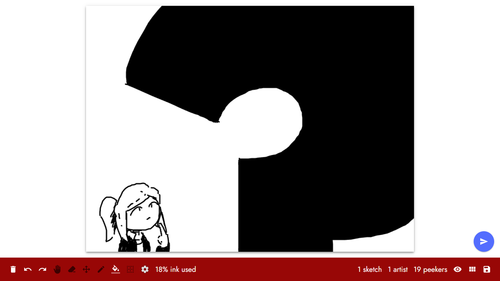
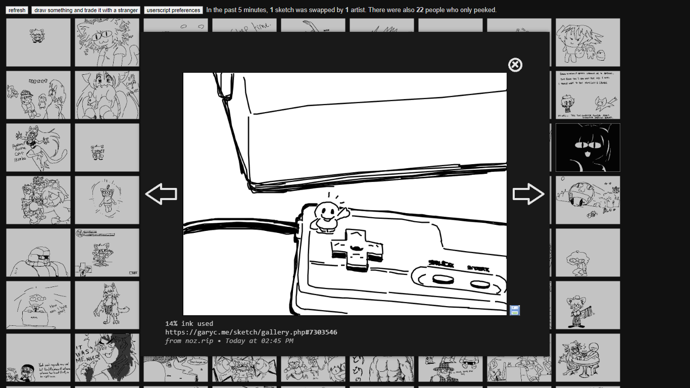
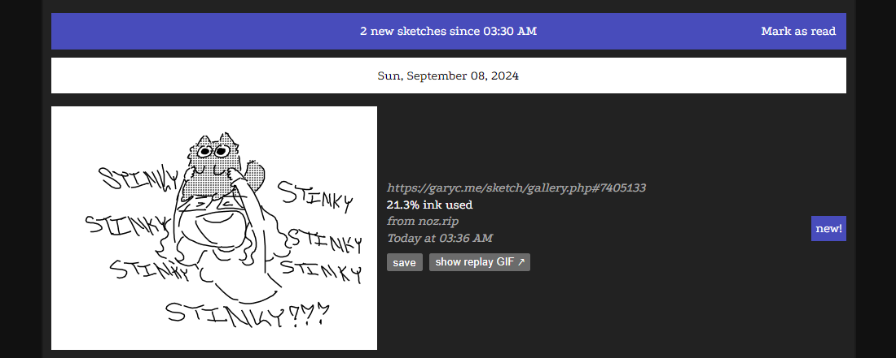

If you're here for the drawing client for garyc.me/sketch, you got the URL wrong. If you're just curious on what else I've got on this site, I wish you luck on finding anything good.
garyc-related
If you don't know what garyc.me/sketch is, fair warning when you do check it out. It's an anarchy drawing site, so expect lewds, and things far more questionable than lewds.
|  |  |  |
| sketch | garyc-sketch-tweaks | garyc-alt-gallery |
|---|---|---|
| a drawing client for garyc.me, forked from dagwaging. | a userscript that fixes the plethora of dumb bugs and lazy implementations on garyc.me/sketch. | an experimental gallery for garyc.me with a column-like view and proper mobile support. |
{kind=link}
{kind=link}
{kind=link}
other webpages
I made these when I was just starting out on HTML and JS.- sae; just a funky rainbow dude dancin
- websafe, a calculator that finds the closest websafe color of a hex (sort of broken)
By the way, the background sketch changes everytime you reload :) I did all of them, and I swear they're all safe for work. You found ??? unique ones so far! There's currently ??? of them in total.